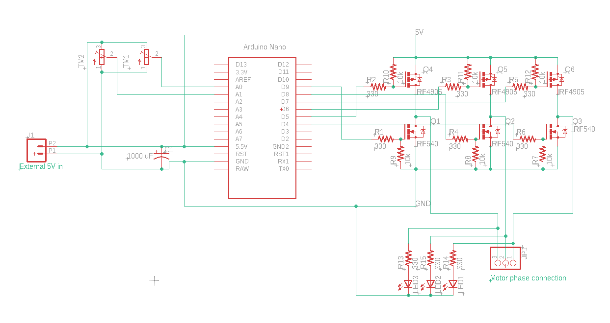
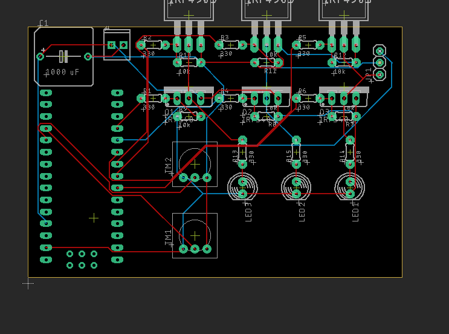

BLDC Motor Driver
I wanted to share a project that I was able to start and get mostly working in the span of less than a day! It's not finished yet, but it has already demonstrated that it will work.
In my electronics hobby, I have accumulated a lot of old broken electronic devices. I often take parts off them to use in other projects, because it means I don't have to wait to go to the electronics shop or wait for a component to come through the mail. Though I've had a lot of success reusing a variety of components (I still use some op-amps I got off a stereo amplifier for testing basic circuits), one class of components that I have never had luck with is brushless DC (BLDC) motors. These are extremely common components and are found in things like DVD drives or computer fans. The reason I haven't had any luck with these motors is because as opposed to regular DC motors, they require a complicated circuit to drive them, whereas DC brushed motors just need a DC power supply. However, I was finally able to design and put together such a circuit, so now I can use these motors!
When designing the circuit, my main criteria was using components that I already had. One major area where this affected the design is the choice of transistors. Generally, BLDC motor drivers use 3 half bridges to pull each motor phase high or low. These half bridges are made with N channel MOSFETs in a bootstrap configuration, so the top MOSFETs can be used as a high-side switch and pull the phase high and the bottom one can pull the phase low. The problem with using a bootstrap configuration is that it requires a special MOSFET driver IC, which I didn't have. Instead, I used P channel MOSFETs for the high side switches, which simply require a voltage difference between the supply voltage and the gate to switch on, and they don't need a special IC to drive them. Unfortunately, this means that the voltage I could put across whatever motor I'm testing will be limited to being exactly 5V, because that is the signal voltage of the Arduino Nano that I'm using, and it is directly switching the MOSFETs. This is OK for small motors, but it won't be enough for a large motor, although I don't find large BLDC motors often in the electronic devices that I find. The MOSFETs also have a couple of resistors to limit the gate current (limiting voltage spikes) and resistors to discharge the gate. There are also LEDs connected to the half bridges for debugging so I can easily see which phases are being commutated.
As mentioned before, the half bridges are commutated using an Arduino Nano. It is powered externally from the 5V rail by a bench power supply (the same power supply that's powering the half bridge), and it has firmware to generate the motor commutation in the right order. The firmware is probably the weakest link in this project, but it works well enough for now. It can be easily changed, so I'm not too worried about having it perfect right now. The reason it's not as good as it could be is because instead of using the hardware timers that exist on the ATMega328p, I'm using delay statements to generate the timings. I will change it in the future, but I need to find the time to sit down and read through all the timer documentation and then figure out a way to implement it. The firmware basically takes inputs from the two potentiometers connected to the Arduino, which control commutation duty cycle (and therefore motor torque), and commutation speed. The firmware then steps through the 6-step commutation process for a BLDC motor with those parameters, and then it does that all in an infinite loop.
The overall circuit is relatively simple, as the only other components are some resistors to limit the MOSFET gate current and discharge the MOSFET gates, and a capacitor across the power rails to smooth out the supply voltage.
I was very lucky that this project worked basically right away. I had some issues loading the firmware onto the Arduino and I was running into issues with loose breadboard connections, but once those were fixed and I connected a motor, it immediately started turning! The torque was a little low, but that might have been because I was using a failing potentiometer for the motor duty cycle control and/or the relatively low supply voltage.
This project is far from over, so there are some things that I want to do before I call it finished. One thing is taking it off the breadboard and putting it on a PCB. I have already started the PCB design process, so I might get it printed in the next couple of weeks. I also want to put it on my GitHub, but I want to refine it more before I do that. I also think it might be interesting to write some software to control the BLDC from a computer, kind of like the VESC configuration utility. I might also ultimately make changes to the circuit design to implement features like the ability to use a higher supply voltage, and I already have a couple ideas for a circuit to implement that. In the future, I want to use this as a platform for testing different ways to drive BLDC motors, such as Hall-effect sensor control, field-oriented control, or back-EMF feedback, and the current state of the project shows great promise for its use for being a development platform.

Update: I have done some more work on the project and now have a dedicated project page for it.